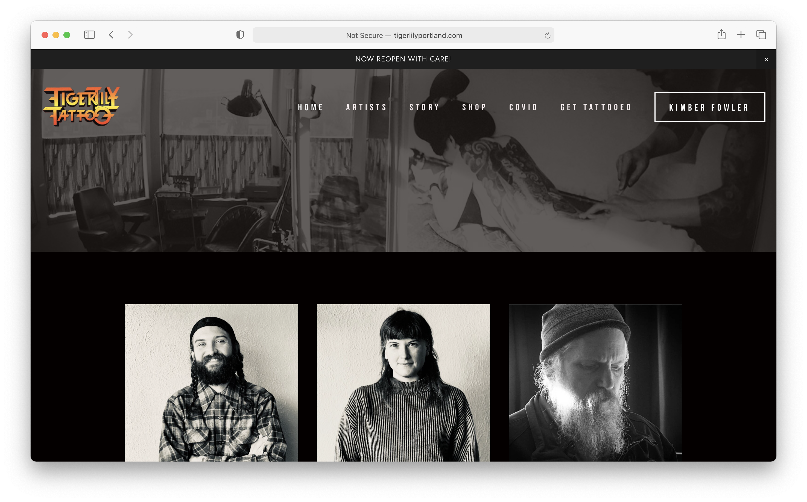
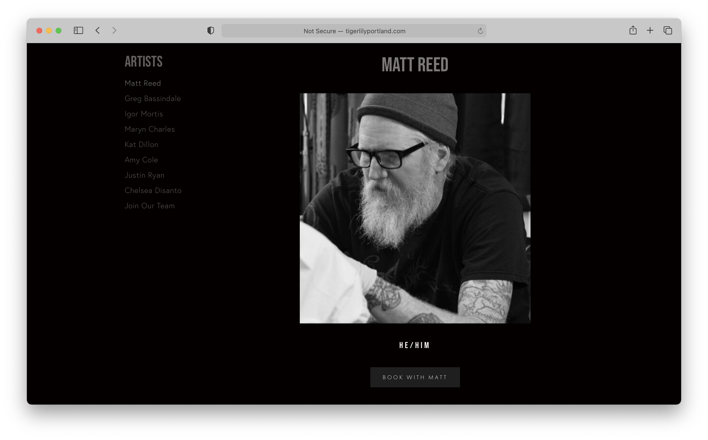
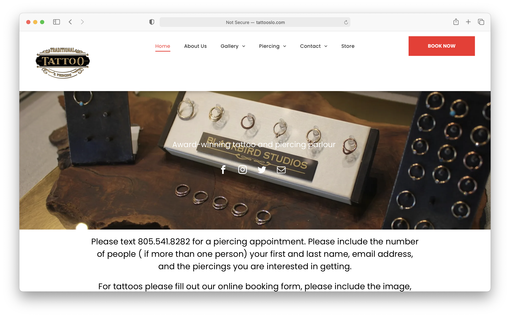
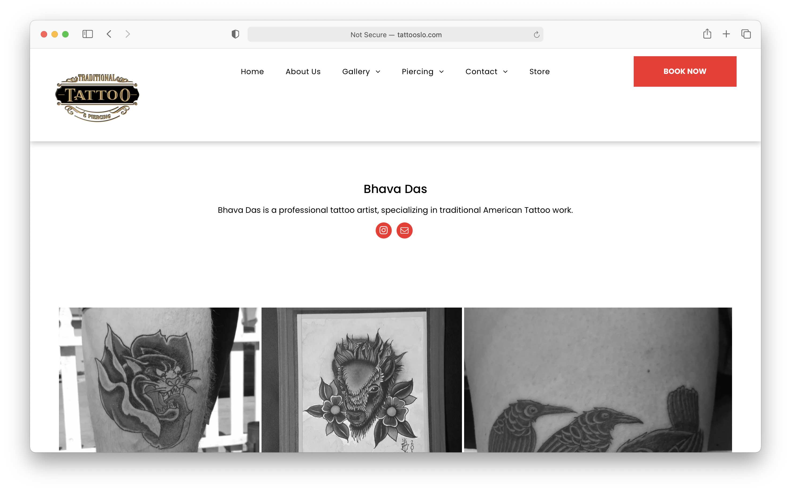

Final project proposal
Introduction
Papaver Tattoo Parlor
This will be a tatttoo parlor that specializes in minimalist, botanical tattoos
Target audience
The people using this site are those who are interested in getting a tattoo, and checking out our studio as a possible location to do so.
Their primary tasks will be to look at our artists and their work, browse our FAQ, possibly book an appointment, and check out our available flash tattoos
Comparative analysis
Tiger Lily Tattoo
 Website 2


Website 3
 Website content
Home Page
* Home page will not contain any written content *
[Customer getting tatooed.]
About Us
Papaver Tattoo Parlor gets it's name from the beautiful poppy flower. This flower holds a deep significance for our founder and store owner, Alena Robinson. Alena has lived in California, home to the beautiful orange poppy, her entire life. However, Alena is also extremley attatched to her Czech roots. Her grandmother, who Alena credits for most of her strength and perserverence, had the last name of Makovička; this translates to poppy in the Czech language.
Given the significance of this flower, Alena dreamed about getting a poppy tattoo since she was a little kid. However, when the time came to get this tattoo, it took eons to find a parlor and artist that used the minimalist style that she wanted. From this frustration arose her idea to start a parlor that was dedicated to minimalist, botanical tattoo art — thus, Papaver Parlor was born!
[Poppy tattoo.]
Artists
Click on an artist to view their work and book an appointment!
[Alena Robinson.]
[Isabel Kelly.]
[Simon Montrose.]
[Bruno Ribeiro.]
Alena Robinson (sub page of artist page)
Founder and Owner, Specializes in floral designs.
[Alena tattoo 1.]
[Alena tattoo 2.]
[Alena tattoo 3.]
[Alena tattoo 4.]
Isabel Kelly (sub page of artist page)
Specializes in tree and leaf designs.
[Izzy tattoo 1.]
[Izzy tattoo 2.]
[Izzy tattoo 3.]
[Izzy tattoo 4.]
Simon Montrose (sub page of artist page)
Specializes in insect and animal designs.
[Simon tattoo 1.]
[Simon tattoo 2.]
[Simon tattoo 3.]
[Simon tattoo 4.]
Bruno Ribiero (sub page of artist page)
Specializes in lettering and thin line designs.
[Bruno tattoo 1.]
[Bruno tattoo 2.]
[Bruno tattoo 3.]
[Bruno tattoo 4.]
Flash Tats
All flash tattoos $50. Walk-ins welcome!
[flash design 1.]
[flash design 2.]
[flash design 3.]
[flash design 4.]
[flash design 5.]
[flash design 6.]
[flash design 7.]
[flash design 8.]
[flash design 9.]
[flash design 10.]
FAQ
Are walk-ins welcome? YES, but do not be surprised if there is a wait.
Are walk-ins welcome? YES
Can I bring my own design? YES, you can send your design to your artist prior to your appointmnet, or come with a design in hand.
Are your artists trained? YES. All of our artists have gone through standard apprenticeship training to get to be the wonderful tattoo artists that they are today. Most even attended school for art & design.
Are you pet friendly? YES, we love your furry friends!
Is there a shop minimum? YES, minimum is $80 (excluding flash designs)
How old do I have to be? MUST BE 18+
[Inside of shop.]